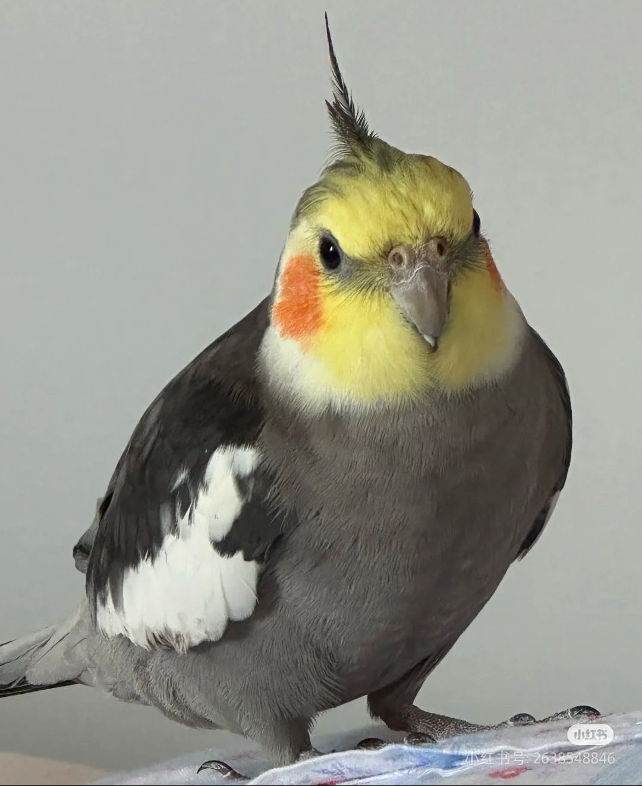

Spotted-Dove's Homepage
|  |
M.Sc Student, University of Science and Technology of China Room A504, Xinzhi Building, 100 Fuxing Road, Hefei, P.R. China (230026) Email: koujs(at)mail.ustc.edu.cn; jskou(at)smail.nju.edu.cn; Google Scholar | Github | DBLP | ORCID | Semantic Scholar |
This is only a test for red style fonts.
Biography
I am currently a first-year graduate student at School of Cyber Science and Technology, University of Science and Technology of China (USTC).
Previously, I received my B.Sc degree from School of Computer Science, Nanjing University (NJU) in June 2024. In the same year, I was admitted to pursue a M.Sc degree at USTC, under the supervision of Prof. Zhendong Mao, without entrance examination.
My research interests include Natural Language Processing and Multi-modal Understanding. Specifically, I work on
Supervised fine-tuning (SFT) alignment for large language models
News
2025/02/03 – Invited as a reviewer for ACL 2025 Student Research Workshop (ACL 2025 SRW)😀.
2024/09/20 – KNN-Instruct is accepted by EMNLP 2024 (Main Conference)!
2024/02/21 – I wrote a blog TransformeråŠ é€Ÿæ¨¡å—Flash Attention的安装 .
2023/12/08 – I wrote a blog 如何手动给docker容器分配IPåœ°å€ .
2023/12/08 – I wrote a blog 如何让深度å¦ä¹ 程åºåå°è¿è¡Œ .
2023/12/02 – I wrote a blog docker+minicondaæ建深度å¦ä¹ ç¯å¢ƒ .
2023/12/02 – I wrote a blog 配置docker容器走winä¸»æœºä»£ç† .
2023/11/21 – I wrote a blog 配置SSH免密登录服务器（支持跳板机） .
2023/11/21 – I created my homepage on Github Pages. Hello world!